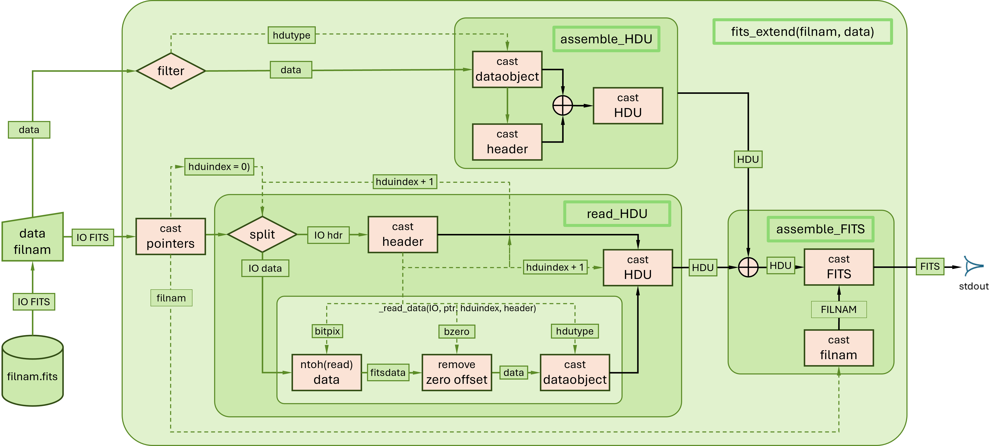
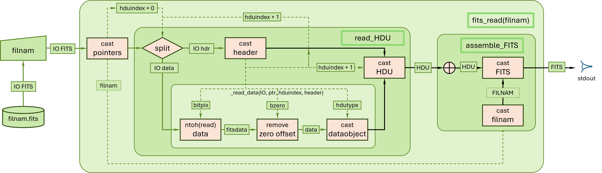

FITS Tools
FITS metainformation
CamiFITS.fits_info — Methodfits_info(f::FITS [, hduindex=1 [; nr=false [, hdr=true]]])
fits_info(hdu::FITS_HDU; nr=false, hdr=true)Metafinformation and data of a given FITS_HDU object with optional record numbering.
hduindex: HDU index (::Int - default:1=primary hdu)nr: include cardindex (::Bool - default:false)hdr: show header (::Bool)
Example:
To demonstrate fits_info we first create the fits object f for subsequent inspection.
julia> filnam = "minimal.fits";
julia> f = fits_create(filnam; protect=false);
julia> fits_info(f)
File: minimal.fits
hdu: 1
hdutype: 'PRIMARY '
DataType: Any
Datasize: (0,)
Metainformation:
SIMPLE = T / file does conform to FITS standard
BITPIX = 64 / number of bits per data pixel
NAXIS = 1 / number of data axes
NAXIS1 = 0 / length of data axis 1
EXTEND = T / FITS dataset may contain extensions
END
Any[]
julia> rm(filnam); f = nothingfits_info(filnam::String [, hduindex=1 [; nr=true [, hdr=true]]])Same as above but creating the fits object by reading filnam from disc and with default record numbering.
hduindex: HDU index (::Int - default:1=primary hdu)nr: include cardindex (::Bool - default:true)hdr: show header (::Bool)
Example:
julia> filnam = "minimal.fits";
julia> fits_create(filnam; protect=false);
julia> fits_info(filnam)
File: minimal.fits
hdu: 1
hdutype: 'PRIMARY '
DataType: Any
Datasize: (0,)
nr | Metainformation:
---------------------------------------------------------------------------------------
1 | SIMPLE = T / file does conform to FITS standard
2 | BITPIX = 64 / number of bits per data pixel
3 | NAXIS = 1 / number of data axes
4 | NAXIS1 = 0 / length of data axis 1
5 | EXTEND = T / FITS dataset may contain extensions
6 | END
Any[]
julia> rm(filnam)CamiFITS.fits_record_dump — Functionfits_record_dump(filnam [, hduindex=0 [; hdr=true [, dat=true [, nr=true [, msg=true]]]])The file filnam as a Vector{String} of 80 character records without any further formatting.
For msg=trueit outputs a listing offilnam` in blocks (2880 bytes) of 36 (optionally indexed) records. The dump proceeds without casting of FITS objects; i.e., without FITS-conformance testing.
default: hduindex = 0 - all blocks hduindex > 0 - only blocks of given hduindex
hduindex: HDU index (::Int - default:0all records)hdr: show header (::Bool - default: true)dat: show data (::Bool - default: true)nr: include record index (row number) (::Bool - default: true)msg: print message (::Bool)
Example:
julia> filnam = "test.fits";
julia> data = [typemin(UInt32),typemax(UInt32)];
julia> fits_create(filnam, data; protect=false);
julia> dump = fits_record_dump(filnam; msg=false);
julia> foreach(println,dump[3:8])
3 | NAXIS = 1 / number of data axes
4 | NAXIS1 = 2 / length of data axis 1
5 | BSCALE = 1.0 / default scaling factor
6 | BZERO = 2147483648 / offset data range to that of unsigned integer
7 | EXTEND = T / FITS dataset may contain extensions
8 | END
julia> dump[37]
" 37 | UInt8[0x80, 0x00, 0x00, 0x00, 0x7f, 0xff, 0xff, 0xff, 0x00, 0x00, 0x00, ⋯, 0x00, 0x00, 0x00, 0x00, 0x00, 0x00]"]"
julia> rm(filnam); f = data = dump = nothingFITS creation, extension and collection
CamiFITS.fits_create — Functionfits_create(filnam [, data [; protect=true]])Create and fits_save a .fits file of given filnam and return Array of HDUs. Key:
data: data primary hdu (::DataType)protect: overwrite protection (::Bool)
NB. For the details of the save procedure (not shown in the flow diagram) see fits_save.
Examples:
julia> filnam = "test.fits";
julia> f = fits_create(filnam, data; protect=false);
julia> fits_info(f)
File: test.fits
hdu: 1
hdutype: 'PRIMARY '
DataType: Int64
Datasize: (3, 3)
Metainformation:
SIMPLE = T / file does conform to FITS standard
BITPIX = 64 / number of bits per data pixel
NAXIS = 2 / number of data axes
NAXIS1 = 3 / length of data axis 1
NAXIS2 = 3 / length of data axis 2
EXTEND = T / FITS dataset may contain extensions
END
3×3 Matrix{Int64}:
11 21 31
12 22 23
13 23 33
julia> rm("minimal.fits"); f = nothingCamiFITS.fits_extend — Methodfits_extend(f::FITS, data [; hdutype="IMAGE"])
fits_extend(filnam::String, data [; hdutype="IMAGE"])HDU array in which the FITS object f or FITS file filnam is extended with the data in the format of the specified hdutype.
NB. For the details of the save procedure (not shown in the flow diagram) see fits_save.

Examples:
julia> filnam = "example.fits";
julia> fits_create(filnam; protect=false);
julia> table = let
[true, 0x6c, 1081, 0x0439, 1.23, 1.01f-6, 1.01e-6, 'a', "a", "abc"],
[false, 0x6d, 1011, 0x03f3, 23.2, 3.01f-6, 3.01e-6, 'b', "b", "abcdef"]
end;
julia> fits_extend(filnam, table; hdutype="table");
julia> fits_info(filnam, 2; hdr=false)
2-element Vector{String}:
" 1 108 1081 1081 1.23 1.01E-6 1.01D-6 a a abc"
" 0 109 1011 1011 23.20 3.01E-6 3.01D-6 b b abcdef"
julia> rm(filnam)CamiFITS.fits_collect — Methodfits_collect(fileStart::String, fileStop::String [; protect=true [, msg=true]])Combine "fileStart" with "fileStop" (with mandatory ".fits" extension)
Key:
protect::Bool: overwrite protectionmsg::Bool: allow status message
Example:
julia> for i=1:5
data = [0 0 0; 0 i 0; 0 0 0]
fits_create("T$i.fits", data; protect=false)
end
julia> f = fits_collect("T1.fits", "T5.fits"; protect=false);
'T1-T5.fits': file created
julia> fits_info(f)[:,:,2]
File: T1-T5.fits
hdu: 1
hdutype: 'PRIMARY '
DataType: Int64
Datasize: (3, 3, 5)
Metainformation:
SIMPLE = T / file does conform to FITS standard
BITPIX = 64 / number of bits per data pixel
NAXIS = 3 / number of data axes
NAXIS1 = 3 / length of data axis 1
NAXIS2 = 3 / length of data axis 2
NAXIS3 = 5 / length of data axis 3
EXTEND = T / FITS dataset may contain extensions
END
3×3 Matrix{Int64}:
0 0 0
0 2 0
0 0 0
julia> for i = 1:5 rm("T$i.fits") end
julia> rm("T1-T5.fits"); f = nothingFITS reading, copying and saving
CamiFITS.fits_read — Methodfits_read(filnam::String)Read .fits file and return Array of FITS_HDUs

Example:
julia> filnam = "minimal.fits";
julia> fits_create(filnam; protect=false);
julia> f = fits_read(filnam);
julia> fits_info(f)
hdu: 1
hdutype: PRIMARY
DataType: Any
Datasize: (0,)
Metainformation:
SIMPLE = T / file does conform to FITS standard
BITPIX = 64 / number of bits per data pixel
NAXIS = 1 / number of data axes
NAXIS1 = 0 / length of data axis 1
BZERO = 0.0 / offset data range to that of unsigned integer
BSCALE = 1.0 / default scaling factor
EXTEND = T / FITS dataset may contain extensions
END
Any[]
julia> rm(filnam); f = nothingCamiFITS.fits_save — Methodfits_save(f::FITS [; protect=true])Write the FITS object to disc. This routine is called by fits_create and fits_extend
CamiFITS.fits_save_as — Methodfits_save_as(f::FITS, filnam::String [; protect=true])Save the FITS object under the name filnam. Key:
protect::Bool: overwrite protection
julia> f = fits_create("minimal.fits"; protect=false);
julia> fits_save_as(f, "kanweg.fits"; protect=false);
julia> f = fits_read("kanweg.fits");
julia> fits_info(f)
File: kanweg.fits
hdu: 1
hdutype: PRIMARY
DataType: Any
Datasize: (0,)
Metainformation:
SIMPLE = T / file does conform to FITS standard
BITPIX = 64 / number of bits per data pixel
NAXIS = 1 / number of data axes
NAXIS1 = 0 / length of data axis 1
BZERO = 0.0 / offset data range to that of unsigned integer
BSCALE = 1.0 / default scaling factor
EXTEND = T / FITS dataset may contain extensions
COMMENT Extended FITS HDU / http://fits.gsfc.nasa.gov/
END
Any[]CamiFITS.fits_copy — Functionfits_copy(filnam1 [, filnam2="" [; protect=true]])Copy filnam1 to filnam2 (with mandatory .fits extension) Key:
protect::Bool: overwrite protectionmsg::Bool: allow status message
Examples:
julia> fits_create("test1.fits"; protect=false);
julia> fits_copy("test1.fits", "test2.fits"; protect=false);
'test1.fits' was copied under the name 'test2.fits'
julia> rm.(["test1.fits", "test2.fits"]);CamiFITS.fits_parse_table — Methodfits_parse_table(hdu::FITS_HDU; byrow=true)Parse FITS_TABLE (ASCII table) into a Vector of its rows/columns for further processing by the user. Default formatting in ISO 2004 FORTRAN data format specified by keys "TFORMS1" - "TFORMSn"). Display formatting in ISO 2004 FORTRAN data format ("TDISP1" - "TDISPn") prepared for user editing.
Example:
julia> filnam = "kanweg.fits";
julia> fits_create(filnam; protect=false);
julia> data = [[true, 0x6c, 1081, 0x0439, 1081, 0x00000439, 1081, 0x0000000000000439, 1.23, 1.01f-6, 1.01e-6, 'a', "a", "abc"],
[false, 0x6d, 1011, 0x03f3, 1011, 0x000003f3, 1011, 0x00000000000003f3, 123.4, 3.01f-6, 3.001e-5, 'b', "b", "abcdef"]];
julia> f = fits_extend(filnam, data; hdutype="table");
julia> fits_parse_table(f.hdu[2]; byrow=true)
2-element Vector{Vector{Any}}:
[1, 108, 1081, 1081, 1081, 1081, 1081, 1081, 1.23, 1.01e-6, 1.01e-6, "a", "a", " abc"]
[0, 109, 1011, 1011, 1011, 1011, 1011, 1011, 123.4, 3.01e-6, 3.001e-5, "b", "b", "abcdef"]
julia> fits_parse_table(f.hdu[2]; byrow=false)
14-element Vector{Any}:
[1, 0]
[108, 109]
[1081, 1011]
[1081, 1011]
[1081, 1011]
[1081, 1011]
[1081, 1011]
[1081, 1011]
[1.23, 123.4]
[1.01e-6, 3.01e-6]
[1.01e-6, 3.001e-5]
["a", "b"]
["a", "b"]
[" abc", "abcdef"]
julia> rm(filnam)FITS keyword tools
CamiFITS.fits_add_key! — Methodfits_add_key!(f::FITS, hduindex::Int, key::String, val::Any, com::String)Add a header record of given 'key, value and comment' to 'HDU[hduindex]' of file with name 'filnam'
Example:
julia> filnam = "minimal.fits";
julia> f = fits_create(filnam; protect=false);
julia> fits_add_key!(f, 1, "KEYNEW1", true, "This is the new key");
julia> fits_info(f)
File: minimal.fits
hdu: 1
hdutype: 'PRIMARY '
DataType: Any
Datasize: (0,)
Metainformation:
SIMPLE = T / file does conform to FITS standard
BITPIX = 64 / number of bits per data pixel
NAXIS = 1 / number of data axes
NAXIS1 = 0 / length of data axis 1
EXTEND = T / FITS dataset may contain extensions
KEYNEW1 = T / This is the new key
END
Any[]CamiFITS.fits_delete_key! — Methodfits_delete_key!(f::FITS, hduindex::Int, key::String)Delete a header record of given key, value and comment from the FITS_HDU f of given hduindex.
Examples:
julia> filnam = "minimal.fits";
julia> f = fits_create(filnam; protect=false);
julia> fits_add_key!(f, 1, "KEYNEW1", true, "This is the new key");
julia> cardindex = get(f.hdu[1].header.map,"KEYNEW1", nothing)
8
julia> keyword = f.hdu[1].header.card[cardindex].keyword
"KEYNEW1"
julia> cardindex = get(f.hdu[1].header.map,"KEYNEW1", nothing)
8
julia> fits_delete_key!(f, 1, "KEYNEW1");
julia> cardindex = get(f.hdu[1].header.map,"KEYNEW1", nothing)
julia> fits_delete_key!(f, 1, "NAXIS");
ERROR: FITSError: 17 - illegal keyword deletion (mandatory keyword)
Stacktrace:
[1] fits_delete_key!(f::FITS, hduindex::Int64, key::String)
@ CamiFITS c:\Users\walra\.julia\dev\CamiFITS.jl\src\fits_public_sector.jl:495
[2] top-level scope
@ REPL[24]:1CamiFITS.fits_edit_key! — Methodfits_edit_key!(f::FITS, hduindex::Int, key::String, val::Any, com::String)Edit a header record of given 'key, value and comment' to 'HDU[hduindex]' of file with name 'filnam'
Example:
julia> using Dates
julia> data = DateTime("2020-01-01T00:00:00.000");
julia> strExample="minimal.fits";
julia> f = fits_create(strExample; protect=false);
julia> fits_add_key!(f, 1, "KEYNEW1", true, "this is record 5");
julia> fits_edit_key!(f, 1, "KEYNEW1", data, "record 5 changed to a DateTime type");
julia> fits_info(f.hdu[1])
hdu: 1
hdutype: 'PRIMARY '
DataType: Any
Datasize: (0,)
Metainformation:
SIMPLE = T / file does conform to FITS standard
BITPIX = 64 / number of bits per data pixel
NAXIS = 1 / number of data axes
NAXIS1 = 0 / length of data axis 1
EXTEND = T / FITS dataset may contain extensions
KEYNEW1 = '2020-01-01T00:00:0' / record 5 changed to a DateTime type
END
Any[]CamiFITS.fits_rename_key! — Methodfits_rename_key!(filnam::String, hduindex::Int, keyold::String, keynew::String)Rename the key of a header record of file with name 'filnam'
Example:
julia> filnam="minimal.fits";
julia> f = fits_create(filnam; protect=false);
julia> fits_add_key!(f, 1, "KEYNEW1", true, "this is a new record");
julia> fits_rename_key!(f, 1, "KEYNEW1", "KEYNEW2");
julia> fits_info(f.hdu[1])
hdu: 1
hdutype: 'PRIMARY '
DataType: Any
Datasize: (0,)
Metainformation:
SIMPLE = T / file does conform to FITS standard
BITPIX = 64 / number of bits per data pixel
NAXIS = 1 / number of data axes
NAXIS1 = 0 / length of data axis 1
BZERO = 0.0 / offset data range to that of unsigned integer
BSCALE = 1.0 / default scaling factor
EXTEND = T / FITS dataset may contain extensions
COMMENT Extended FITS HDU / http://fits.gsfc.nasa.gov/
KEYNEW2 = T / this is a new record
END
Any[]FITS keyword description tool
In the CamiFITS package the mandatory FITS keywords are autogenerated. To support easy user access to the definition of all reserved FITS keywords (mandatory or non-mandatory) CamiFITS includes the fits_keyword tool.
The description of the FITS keywords is provided by fits_keyword:
julia> fits_keyword("bitpix")
KEYWORD: BITPIX
REFERENCE: FITS Standard - version 4.0 - Appendix C
CLASS: general
STATUS: mandatory
HDU: primary, groups, extension, array, image, ASCII-table, bintable,
VALUE: integer
RANGE: -64,-32,8,16,32,64
COMMENT: bits per data value
DEFINITION: The value field shall contain an integer. The absolute value is
used in computing the sizes of data structures. It shall specify the number of
bits that represent a data value (using a minus sign for floating point data).Without argument fits_keyword provides the list of all FITS defined keywords (for the HDU types inplemented).
julia> fits_keyword()
FITS defined keywords:
(blanks) AUTHOR BITPIX BLANK BLOCKED BSCALE BUNIT BZERO
CDELTn COMMENT CROTAn CRPIXn CRVALn CTYPEn DATAMAX DATAMIN
DATE DATE-OBS END EPOCH EQUINOX EXTEND EXTLEVEL EXTNAME
EXTVER GCOUNT GROUPS HISTORY INSTRUME NAXIS NAXISn OBJECT
OBSERVER ORIGIN PCOUNT PSCALn PTYPEn PZEROn REFERENC SIMPLE
TBCOLn TDIMn TDISPn TELESCOP TFIELDS TFORMn THEAP TNULLn
TSCALn TTYPEn TUNITn TZEROn XTENSION
HDU options: 'primary', 'extension', 'array', 'image', 'ASCII-table', 'bintable'
reference: FITS Standard - version 4.0 - Appendix CSpecifying the FITS HDU type in fits_keyword the user obtains the restricted set of HDU-specific keywords.
julia> fits_keyword(hdutype="'PRIMARY '")
FITS defined keywords:
HDU type: 'primary'
- general
- mandatory: BITPIX END NAXIS NAXISn SIMPLE
- reserved : BLANK BSCALE BUNIT BZERO CDELTn CROTAn CRPIXn
CRVALn CTYPEn DATAMAX DATAMIN EXTEND
- bibliographic
- mandatory:
- reserved : AUTHOR REFERENC
- commentary
- mandatory:
- reserved : (blanks) COMMENT HISTORY
- observation
- mandatory:
- reserved : DATE-OBS EPOCH EQUINOX INSTRUME OBJECT OBSERVER TELESCOP
HDU options: 'primary', 'extension', 'array', 'image', 'ASCII-table', 'bintable'
reference: FITS Standard - version 4.0 - Appendix CBy using the keyword "ALL" the user can dump the full list of keyword descriptions:
julia> fits_keyword("all")
FITS defined keywords:
KEYWORD: (blank)
REFERENCE: FITS Standard - version 4.0 - Appendix C
CLASS: commentary
STATUS: reserved
HDU: primary, groups, extension, array, image, ASCII-table, bintable,
VALUE: none
COMMENT: descriptive comment
DEFINITION: Columns 1-8 contain ASCII blanks. This keyword has no associated
value. Columns 9-80 may contain any ASCII text. Any number of card images
with blank keyword fields may appear in a header.
⋮
KEYWORD: XTENSION
REFERENCE: FITS Standard - version 4.0 - Appendix C
CLASS: general
STATUS: mandatory
HDU: extension, array, image, ASCII-table, bintable,
VALUE: string
COMMENT: marks beginning of new HDU
DEFINITION: The value field shall contain a character string giving the name of
the extension type. This keyword is mandatory for an extension header and must
not appear in the primary header. For an extension that is not a standard
extension, the type name must not be the same as that of a standard extension.
CamiFITS.fits_keyword — Methodfits_keyword(keyword::String [; msg=true])
fits_keyword([; hdutype="all" [, msg=true]])Description of the reserved keywords of the FITS standard:
(blanks), ALL, AUTHOR, BITPIX, BLANK, BLOCKED, BSCALE, BUNIT, BZERO, CDELTn, COMMENT, CROTAn, CRPIXn, CRVALn, CTYPEn, DATAMAX, DATAMIN, DATE, DATE-OBS, END, EPOCH, EQUINOX, EXTEND, EXTLEVEL, EXTNAME, EXTVER, GCOUNT, GROUPS, HISTORY, INSTRUME, NAXIS, NAXISn, OBJECT, OBSERVER, ORIGIN, PCOUNT, PSCALn, PTYPEn, PZEROn, REFERENC, SIMPLE, TBCOLn, TDIMn, TDISPn, TELESCOP, TFIELDS, TFORMn, THEAP, TNULLn, TSCALn, TTYPEn, TUNITn, TZEROn, XTENSION,
where n = 1,...,nmax as specified for the keyword. Use the keyword "ALL" to dump the full list of keyword descriptions.
The descriptions are based on appendix C to FITS standard - version 4.0, which is not part of the standard but included for convenient reference.
julia> fits_keyword("naxisn");
KEYWORD: NAXISn
REFERENCE: FITS Standard - version 4.0 - Appendix C
CLASS: general
STATUS: mandatory
HDU: primary, groups, extension, array, image, ASCII-table, bintable,
VALUE: integer
RANGE: [0:]
COMMENT: size of the axis
DEFINITION: The value field of this indexed keyword shall contain a non-negative integer,
representing the number of elements along axis n of a data array.
The NAXISn must be present for all values n = 1,...,NAXIS, and for no other values of n.
A value of zero for any of the NAXISn signifies that no data follow the header in the HDU.
If NAXIS is equal to 0, there should not be any NAXISn keywords.
julia> fits_keyword()
FITS defined keywords:
(blanks) AUTHOR BITPIX BLANK BLOCKED BSCALE BUNIT BZERO
CDELTn COMMENT CROTAn CRPIXn CRVALn CTYPEn DATAMAX DATAMIN
DATE DATE-OBS END EPOCH EQUINOX EXTEND EXTLEVEL EXTNAME
EXTVER GCOUNT GROUPS HISTORY INSTRUME NAXIS NAXISn OBJECT
OBSERVER ORIGIN PCOUNT PSCALn PTYPEn PZEROn REFERENC SIMPLE
TBCOLn TDIMn TDISPn TELESCOP TFIELDS TFORMn THEAP TNULLn
TSCALn TTYPEn TUNITn TZEROn XTENSION
HDU options: 'primary', 'extension', 'array', 'image', 'ASCII-table', 'bintable'
reference: FITS Standard - version 4.0 - Appendix CFITS terminology
CamiFITS.fits_terminology — Methodfits_terminology([term::String [; test=false]])Description of the defined terms from FITS standard:
ANSI, ASCII, ASCII NULL, ASCII character, ASCII digit, ASCII space, ASCII text, Array, Array value, Basic FITS, Big endian, Bit, Byte, Card image, Character string, Conforming extension, Data block, Deprecate, Entry, Extension, Extension type name, FITS, FITS Support Office, FITS block, FITS file, FITS structure, Field, File, Floating point, Fraction, Group parameter value, HDU Header and Data Unit., Header, Header block, Heap, IAU, IAUFWG, IEEE, IEEE NaN, IEEE special values, Indexed keyword, Keyword name, Keyword record, MEF, Mandatory keyword, Mantissa, NOST, Physical value, Pixel, Primary HDU, Primary data array, Primary header, Random Group, Record, Repeat count, Reserved keyword, SIF, Special records, Standard extension.
julia> fits_terminology()
FITS defined terms:
ANSI, ASCII, ASCII NULL, ASCII character, ..., SIF, Special records, Standard extension.
julia> fits_terminology("FITS")
FITS:
Flexible Image Transport System.
julia> get(dictDefinedTerms, "FITS", nothing)
"Flexible Image Transport System."
julia> fits_terminology("p")
p:
Not one of the FITS defined terms.
suggestions: Physical value, Pixel, Primary HDU, Primary data array, Primary header.
see FITS Standard - https://fits.gsfc.nasa.gov/fits_standard.html